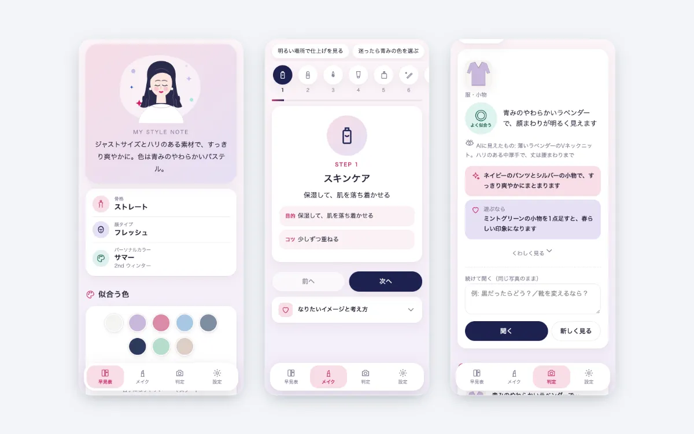
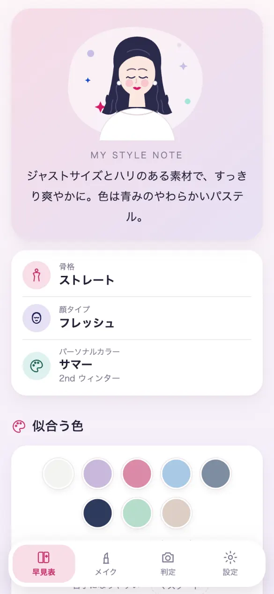
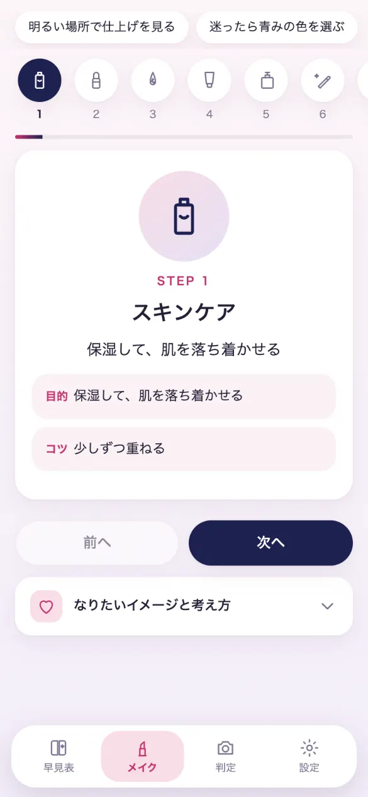
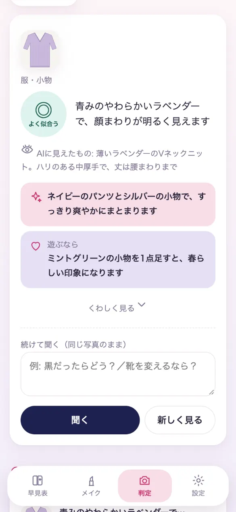

服とメイクを選ぶビューティーアドバイザーアプリ
パーソナルカラー・骨格・顔タイプの診断結果を、毎日の服とメイク選びに使うためのWebアプリです。自分用に企画から開発まで行い、毎日使っています。

困りごと
「パーソナルカラー・骨格・顔タイプの診断を受けても、結果が『診断して終わり』になりがち。お店や朝の身支度の場面で、何が似合うかをすぐ思い出せない。」
そこで、診断結果を、毎日の服選び・メイク・買い物で使える「自分専用のルールブック」にすることを目指しました。
作ったもの

診断結果を1画面の早見表に
骨格・顔タイプ・パーソナルカラーと、似合う色・服選びのルールを1画面にまとめています。

メイクをステップごとに
メイクの手順を1ステップずつ、目的とコツつきで表示します。片手で次へ進めます。

写真を撮って AI に聞く
服やコスメの写真を撮ると、診断のルールをもとに AI が似合うかを判定し、理由と合わせ方まで答えます。
画面は、架空のデータを入れて撮影しています。
工夫したこと
- AI の答えに根拠がつく
- 骨格・顔タイプ・パーソナルカラー・メイクレッスンの内容をまとめて AI に渡すので、「なぜ似合うか・何を足せばよいか」まで返ってきます。
- 品番だけでも調べて判定する
- 商品を調べる係の AI を別にして、そちらには品番などの文字だけを渡します。
- 使った金額が見える
- 今月 AI を使った回数と金額を、設定画面に表示します。
進め方
どのアプリも、次の5つの観点で整理して作っています。
- 目的から決める
だれが・いつ・何のために使うかを先に決め、「どうなれば完成か」を1つずつ言葉にする
「お店や朝の支度で、その場で使える」を基準に、スマホの片手操作を前提にしました。
- 続けられる使いやすさ
文字の大きさ・色の濃さ・押しやすさを、決めた基準で確かめる
ステップごとのメイク手順を、片手で次へ進めるようにしました。
- データの安全
どのデータをどこへ送ってよいかを先に表で決め、公的なガイドラインをもとに確かめる
AI に送るものを表で決め、商品を調べる係には品番などの文字だけを渡します。
- 壊さない・失わない
直すたびに、実際に動かして確かめる
新しい版が出たら知らせる仕組みで、いつも最新の版を使えるようにしました。
- 使いながら育てる
実際に使い、気づいた所を直す
毎日の服・メイク選びで使っています（実運用中）。
使いやすさとデータの安全は、それぞれ独自にまとめたルール（デザインは文字の大きさ・色の濃さ・押しやすさなど。セキュリティは IPA「安全なウェブサイトの作り方」と、OWASP Top 10（Webでよく狙われる弱点の一覧）がもと）の項目ごとに確かめています。
安全とデータの扱い
- サーバーを持たず、診断データと判定の履歴はスマホのブラウザの中にだけ保存します。
- AI の判定では、判定に使う写真・診断の文字・メモなどを、AI（Claude）にだけ直接送ります。送ってよいものは表で決めています。
- AI の利用キーは端末の中だけに置き、自動でお金が足されない設定にして、使える額を前払いの残高までにしています。
- 商品を調べる係の AI には、商品名・品番などの文字だけを渡し、写真や診断データは渡さない仕組みにしています。
- データを送ってよい先を表で決め、それ以外には送らない作りにしています。
納品物のイメージ
- Webアプリ一式
- 画面・動き・保存の仕組みをまとめたファイル。GitHub Pages（無料でWebページを公開できるサービス）などに置くだけで動きます
- 使い方・公開の手順書
- 初めての方でも、手順どおりに進めれば使い始められる資料
あわせて、次の資料もお付けします。
- 設計書
- 画面の流れ、保存するデータの形、外とのつながりをまとめた資料
- 動作確認の記録
- 何を確かめて、どうだったかの一覧
見本のアプリは自分用のため、一部そろっていない資料もあります。